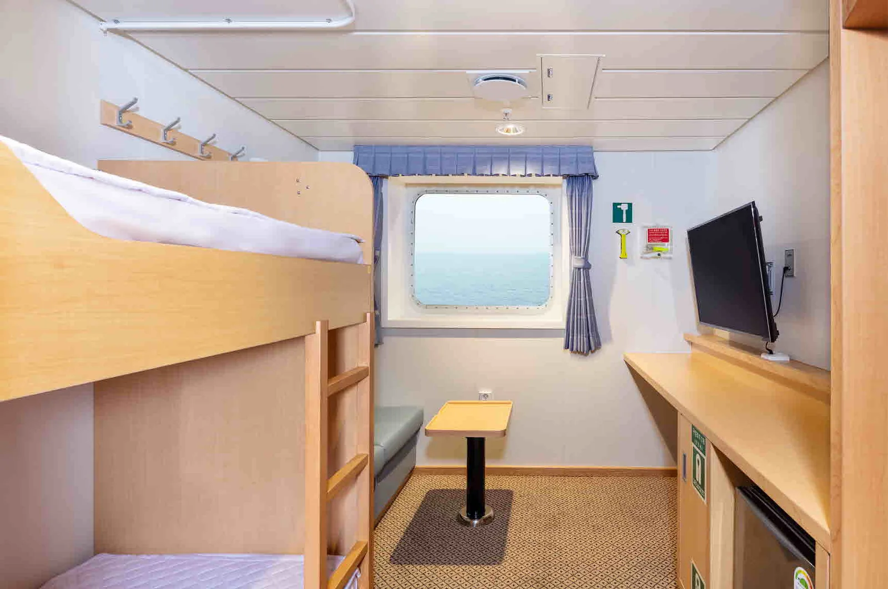

▲ 인천 연안여객터미널. 차량 선적은 출항 훨씬 전부터 시작된다 ⓒ 인천광역시 (공공누리 제1유형)
섬 여행에서 렌터카를 쓰지 않는 이유는 분명합니다. 짐을 옮기지 않아도 되고, 익숙한 차로 다닐 수 있고, 며칠 이상이면 비용도 유리해집니다.
다만 조건이 붙습니다. 특히 전기차라면, 충전을 많이 해간 것이 오히려 문제가 됩니다.
1. 전기차는 50%가 상한선입니다
여객선 차량 선적에서 전기차에만 붙는 규정이 있습니다. 배터리 충전율이 50%를 넘으면 선적이 거부됩니다.
내연기관차 운전자에게는 낯선 조건입니다. 기름은 가득 채워도 문제가 없기 때문입니다. 하지만 전기차는 반대로 많이 채워 갈수록 불리합니다.
📍 왜 50%인가
리튬이온 배터리는 충전율이 높을수록 저장된 에너지가 크고, 열폭주가 발생했을 때 방출되는 에너지도 커집니다.
선박은 화재가 발생해도 대피할 곳이 없는 공간입니다. 차량 갑판은 밀폐도가 높고 차가 빽빽하게 실립니다. 육상보다 훨씬 보수적인 기준이 적용되는 이유입니다.
| 항목 | 기준 |
|---|---|
| 충전율 | 50% 이하 — 초과 시 선적 불가 |
| 도착 시각 | 출항 1시간 30분 전 필수 |
| 절차 | 터미널 도착 후 차량 안정화 · 이상징후 점검 후 선적 |
| 제한 | 외관 충돌 흔적 또는 사고 이력 있는 전기차는 불가 |
계획을 거꾸로 짜야 합니다. 항구에 도착하기 전 마지막 충전소에서 일부러 충전하지 않고, 도착 후 목적지에서 충전하는 순서가 됩니다.

▲ 도착지 충전 계획이 전제가 된다. 50% 이하로 배를 타면 내려서 바로 충전할 수 있어야 한다 ⓒ 현대자동차 제공

▲ 카페리 객실. 차량 운임과 별도로 인원수만큼 여객 승선권을 사야 한다 ⓒ 한일고속
2. 운임은 하나가 아닙니다
차량 선적 요금은 단일 금액이 아니라 여러 항목의 합입니다.
| 항목 | 내용 |
|---|---|
| 기본 운임 | 차종·크기별로 결정 |
| 유류할증료 | 유가에 따라 변동 |
| 하역료 | 선적·하역 작업 비용 |
| 터미널 시설사용료 | 약 1,500원 |
| 차급 | 편도 |
|---|---|
| 경차 | 10만 원 안팎 |
| 중형~준대형 (쏘나타·그랜저급) | 13만~16만 원 |
여기에 주말·공휴일 6~10% 할증, 성수기 추가 10% 내외가 붙습니다. 출발 항구에 따라서도 달라지며, 완도항처럼 항해 시간이 짧은 노선이 상대적으로 저렴한 편입니다.
📍 사람 표는 따로 사야 합니다
운전자의 여객 승선 운임은 차량 탁송 요금에 포함돼 있지 않습니다. 반드시 일반 승선권을 별도로 예매하고 결제해야 합니다.
차만 예약하고 사람 표를 빠뜨리면 차는 실리는데 운전자가 못 타는 상황이 생깁니다. 출발지와 도착지가 다른 일정이라면 편도로 각각 예약해야 합니다.
3. 울릉도는 조건이 또 다릅니다
제주 외에 차량 선적이 가능한 대표 항로가 울릉도입니다.
후포항 기준 승용차 편도 6만 9,000원 수준의 운임이 안내된 사례가 있습니다. 차량 선적은 출항 2시간 전부터 시작됩니다.
다만 울릉도는 선박별 선적 가능 대수가 제한되는 경우가 많고, 기상 영향도 큽니다. 제주보다 결항 변수를 더 크게 잡아야 합니다.

▲ 카페리 객실. 항해 중에는 차량 갑판에 들어갈 수 없어 필요한 짐은 미리 꺼내야 한다 ⓒ 한일고속

▲ 울릉도 사동항. 선박별 선적 대수가 제한되고 기상 영향이 커 결항 변수를 크게 잡아야 한다 ⓒ 한국관광공사 (공공누리 제1유형)
4. 그 밖의 선적 규정
| 대상 | 규정 |
|---|---|
| 2~2.5톤 이상 화물차 | 사전 전화 예약 필수 |
| 자전거 | 1대당 3,000원 · 선박별 대수 제한 가능 |
| 차고가 높은 차량 | 선박 구조상 제한될 수 있어 사전 확인 |
루프박스나 루프탑 텐트를 얹은 차량은 전고가 올라가 갑판 진입에 걸릴 수 있습니다. 캠핑 장비를 얹고 가는 경우라면 미리 문의하는 편이 안전합니다.

▲ 목포 연안여객선터미널. 차를 실으면 일정 전체가 배 시간에 묶인다 ⓒ 한국관광공사 (공공누리 제1유형)
5. 당일 흐름
| 순서 | 내용 |
|---|---|
| 1 | 터미널 도착 — 전기차는 출항 1시간 30분 전 |
| 2 | 차량 등록증·신분증 확인, 승선권 발권 |
| 3 | 전기차는 충전율 확인 및 외관·이상징후 점검 |
| 4 | 대기 후 갑판 선적 — 지시에 따라 직접 운전해 진입 |
| 5 | 차를 두고 여객 공간으로 이동 — 항해 중 갑판 출입 불가 |
항해 중에는 차량 갑판에 들어갈 수 없습니다. 필요한 물건은 배에 오르기 전에 미리 꺼내야 합니다. 귀중품과 전자기기는 특히 그렇습니다.

▲ 내 차로 섬을 다니면 이동 자유도가 올라간다. 대신 배 시간에 일정 전체가 묶인다 ⓒ 한국관광공사 (공공누리 제1유형)

▲ 포항 여객선 터미널. 울릉 항로는 기상 영향이 커 결항 변수를 크게 잡아야 한다 ⓒ 한국관광공사 (공공누리 제1유형)
6. 예약 전 확인할 것
항로와 선사에 따라 규정이 조금씩 다릅니다. 특히 전기차 기준은 선사별로 세부 조건이 갈리므로, 예약 단계에서 직접 확인하는 편이 확실합니다.
7. 정리
여객선에 차를 실을 때 전기차는 배터리 충전율이 50%를 넘으면 선적이 거부됩니다. 최소 출항 1시간 30분 전 도착해야 하고, 외관에 충돌 흔적이 있거나 사고 이력이 있는 전기차도 제한됩니다.
제주 항로 기준 편도 운임은 경차 10만 원 안팎, 쏘나타·그랜저급 13만~16만 원 수준입니다. 여기에 주말·공휴일 6~10%, 성수기 추가 10% 내외가 붙습니다. 운임은 기본운임에 유류할증료·하역료·터미널 시설사용료가 더해진 값입니다.
가장 흔한 실수는 운전자 승선권을 따로 예매하지 않는 것입니다. 차량 탁송 요금에는 사람 표가 포함돼 있지 않습니다. 항해 중에는 차량 갑판 출입이 불가하므로 필요한 짐은 미리 꺼내야 합니다.